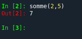

Cours
1) Il n'y a pas que Python dans la vie !
a) Présentation du langage C
Jusqu'à présent, nous avons surtout utilisé le langage de programmation Python. Il existe beaucoup d'autres langages de programmation : Java, C++, Ruby, PHP, JavaScript... Tous ces langages sont différents, mais ils ont aussi des points communs, on peut même dire qu'ils ont plus de points communs que de différences. Afin d'entrer un peu dans les détails, nous allons nous intéresser à un langage qui tient une place à part dans l'histoire de l'informatique, le langage C. Le but n'est pas de faire de vous des "programmeurs C", mais de vous montrer que même si le langage Python et le langage C ont des différences, ils ont aussi de nombreux points communs.
Le langage C a été créé par Dennis Ritchie (1941-2011) et Ken Thompson (1943- ) en 1972 (oui, les mêmes Ritchie et Thompson qu'UNIX). Le langage C est une évolution du langage B (langage B a été créé par Ken Thompson à la fin des années 60). Le langage C est encore très utilisé aujourd'hui (dans le top 10 des langages de programmation les plus utilisés), par exemple, le noyau du système d'exploitation Linux est écrit en C. Tout informaticien qui se respecte doit avoir, un jour ou l'autre (au moins pendant ses études), écrit des programmes en C.
Ken Thompson et Dennis Ritchie :

Le C est un langage compilé, c'est-à-dire qu'un programme appelé "compilateur" transforme le code source (le code écrit par le programmeur) en langage machine. Cette opération, appelée "compilation", doit être effectuée à chaque fois que le programmeur modifie le code source, cette phase de compilation peut prendre des dizaines de minutes pour de très gros programmes. Il existe une autre méthode pour passer du code source au langage machine : l'interprétation. En simplifiant à l'extrême, l'interpréteur assure une traduction "à la volée" des instructions. (une ligne est traduite en langage machine puis immédiatement exécutée), alors que dans le cas de la compilation l'ensemble du code source est transformé en langage machine avant le début de l'exécution du programme. Les langages compilés (comme le langage C) sont réputés plus rapides à l'exécution que les langages interprétés. Il existe une troisième voie qui a le vent en poupe : le code source est compilé en pseudocode (appelé bytecode) qui n'est pas encore du langage machine, mais s'en rapproche par rapport au code source de départ. Ce bytecode est ensuite interprété (l'interprétation est beaucoup plus rapide que pour des langages 100% interprétés). Python utilise cette technique.
Voici un programme (très simple) écrit en C :
#include <stdio.h>
int main(void) {
printf("Hello World\n");
return 0;
}
La première ligne du programme :
#include <stdio.h>
n'est pas une instruction à proprement parlé, c'est une "directives de préprocesseur", cette ligne est lue au début de la phase de compilation. Nous aurons l'occasion de revenir sur cette ligne plus tard, pour le moment, vous devez juste savoir que cette ligne est obligatoire si vous voulez utiliser "printf" (voir quelques lignes plus loin).
Le programme commence réellement avec la ligne :
int main(void) {
Nous avons ici une fonction (équivalent à un "def main():" en Python), comme vous l'avez sans doute déjà compris, tout le code compris entre l'accolade ouvrante "{" et l'accolade fermante "}" constitue la fonction nommée "main". Voici donc une première différence avec Python, le code constituant une fonction n'est pas défini grâce à une indentation, mais grâce à des accolades (vous remarquerez que l'on utilise tout de même une indentation, mais cette dernière n'est pas obligatoire en C mais seulement fortement conseillée afin de rendre le code plus lisible).
Le "int" situé avant le nom de la fonction ("main" dans cet exemple), signifie que la fonction doit renvoyer un entier. Le "void" situé entre parenthèses signifie que notre fonction ne prend aucun paramètre. Nous aurons l'occasion de revenir sur ce "int" et ce "void" un peu plus loin.
La ligne :
printf("Hello World\n");
permet d'afficher le message "Hello World" dans la console (le "\n" permet de passer à la ligne suivante).
Le
return 0;
permet de renvoyer l'entier 0. Pourquoi renvoie-t-on 0 ? Tout simplement pour signifier que la fonction "main" a bien été exécutée jusqu'au bout. Si cette fonction renvoie autre chose que 0 cela signifiera qu'il y a eu un problème lors de l'exécution de cette dernière.
Vous avez dû remarquer que la plupart des lignes se terminent par un point-virgule. Ce point virgule indique au compilateur que la ligne est terminée, il est obligatoire.
Si on omet un point virgule comme ici :
#include <stdio.h>
int main(void) {
printf("Hello World\n")
return 0;
}
On aura une erreur durant la phase de compilation :
exit status 1
main.c:4:24: error: expected ';' after expression
printf("Hello World\n")
^
;
1 error generated.
La première ligne ("exit status 1") vous indique que la fonction "main" n'a pas renvoyée l'entier 0 : il y a donc eu un problème lors de la compilation.
Le message d'erreur qui suit est très explicite puisqu'il indique clairement qu'il manque un point-virgule à la fin de la ligne printf("Hello World\n")
Le programme Python permettant d'obtenir le même résultat que le programme ci-dessus est très simple puisqu'il est constitué d'une seule ligne :
print("Hello World")
En C, c'est un petit plus complexe, car la fonction "main" est obligatoire. En effet, au moment de l'exécution du programme, le système recherche la fonction "main" afin d'exécuter les instructions qui se trouvent "à l'intérieur" de cette fonction (le nom "main" est obligatoire).
Il est bien sûr possible d'utiliser des variables en C :
#include <stdio.h>
int main(void) {
int i;
i=15;
printf("La valeur de i est %d\n",i);
return 0;
}
Voici le programme équivalent en Python :
i=15
print(f"La valeur de i est {i}")
Dans le programme en C, on s'attardera particulièrement sur la ligne :
int i;
Cette ligne permet de déclarer la variable i et de préciser que cette variable "i" "contiendra" un nombre de type entier (cette variable sera de type entier). En C, cette déclaration est obligatoire, afin de, au moment de la compilation, réserver la place nécessaire en mémoire pour la valeur de la variable i. Dans notre cas, le compilateur réservera pour i, une certaine quantité de mémoire (la quantité de mémoire nécessaire pour "accueillir" un entier).
Il existe d'autres types de variables en C : "long", "float", "char"... mais, encore une fois, notre but n'étant pas d'apprendre à programmer en C, nous en resterons là.
En Python les variables ont aussi un type, mais le typage est dit dynamique : une variable peut changer de type au cours de l'exécution d'un programme, il n'est donc pas nécessaire de déclarer le type d'une variable en Python (le système s'occupe de définir le type d'une variable par lui-même).
Intéressons-nous maintenant aux boucles en C :
#include <stdio.h>
int main(void) {
int i;
i=0;
while (i<10){
printf("La valeur de i est %d\n",i);
i=i+1;
}
return 0;
}
voici le programme équivalent en Python :
i=0
while i<10:
print(f"La valeur de i est {i}")
i=i+1
Comme vous pouvez le constater, les 2 programmes diffèrent peu, on retrouve les accolades qui définissent le début et la fin de la boucle.
Les conditions en C :
#include <stdio.h>
int main(void) {
int i;
i=19;
if (i<18){
printf("Vous êtes mineur");
}
else {
printf("Vous êtes majeur");
}
return 0;
}
Encore quelques différences avec le même programme en Python, mais rien de très complexe.
Nous avons déjà eu l'occasion de parler des fonctions en C avec la fonction "main", il est bien évidemment possible d'écrire d'autres fonctions en C :
voici un programme Python qui utilise une fonction :
def somme(x,y):
s=x+y
return s
a=5
b=4
res=somme(a,b)
print(f"La somme de {a} et de {b} vaut {res}")
et voici l'équivalent en C :
#include <stdio.h>
int somme(int x, int y){
int s;
s=x+y;
return s;
}
int main(void) {
int res;
int a;
int b;
a=5;
b=4;
res=somme(a,b);
printf("La somme de %d et de %d vaut %d\n",a,b,res);
return 0;
}
Nous constatons comme pour la fonction "main" qu'il est nécessaire d'indiquer le type de la valeur renvoyée par la fonction (ici "int" car notre fonction "somme" renvoie bien un entier). À la différence de notre fonction "main", la fonction "somme" prend deux paramètres : x et y (tous les deux de type entier). Il est nécessaire d'indiquer le type des paramètres, ici "int" pour x et y. Si vous omettez le type d'un paramètre, vous aurez le droit à une erreur au moment de la compilation.
b) Prototype d'une fonction
Vous avez sans doute remarqué que la fonction "somme" du programme ci-dessus se trouve dans le code avant la fonction "main", si vous placez la fonction "somme" après la fonction "main" cela ne fonctionnera pas, car le compilateur ne "comprendra" pas la ligne "res=somme(a,b);", en effet à ce stade le compilateur n'aura pas encore "rencontré" une fonction dénommée "somme". Cependant, il est tout de même possible de placer la fonction "somme" après la fonction "main" à condition de fournir au compilateur le prototype de la fonction "somme". Le prototype d'une fonction permet "d'annoncer" au compilateur qu'une fonction X renvoyant une valeur d'un certain type et qui possède un (ou des) paramètre(s) d'un certain type va être définie "un peu plus loin" dans le programme.
N.B : certains compilateurs C ne renvoient pas d'erreur dans la situation décrite ci-dessus, juste un avertissement ("warning")
Pour éviter les erreurs (et les "warning"), il faut écrire :
#include <stdio.h>
int somme(int x, int y);
int main(void) {
int res;
int a;
int b;
a=5;
b=4;
res=somme(a,b);
printf("La somme de %d et de %d vaut %d\n",a,b,res);
return 0;
}
int somme(int x, int y){
int s;
s=x+y;
return s;
}
La ligne
int somme(int x, int y);
correspond au prototype de la fonction "somme". À noter qu'il est aussi possible d'omettre les noms des paramètres au niveau du prototype et d'uniquement indiquer le type des arguments : "int somme(int, int);"
L'utilisation des prototypes est une "bonne pratique" de programmation, il est donc très vivement recommandé d'utiliser les prototypes en C.
Quand les programmes C comportent de nombreuses fonctions, il est judicieux de placer les prototypes des fonctions dans un fichier à part. Ces fichiers portent l'extension "h" (exemple : "stdio.h"), ils sont appelés "header" ("en tête" en français). Le "#include
2) débogage d'un programme
a) Python trop "laxiste" ?
On pourrait penser que toutes les contraintes imposées par le C par rapport au Python (indiquer le type des variables, le type des paramètres d'une fonction, le type de la valeur renvoyée par une fonction) est un handicape pour le programmeur. En fait, pas du tout, car ces exigences obligent le programmeur à une plus grande rigueur et permettent de détecter beaucoup plus facilement certaines erreurs. Certains programmeurs n'aiment pas programmer en Python parce qu'ils le trouvent trop "laxiste" avec le type des variables.
Prenons un exemple avec la fonction Python suivante :
def somme(x,y):
s=x+y
return s
Si on utilise cette fonction avec les arguments 2 et 5, aucun problème la fonction renvoie bien 7.
En revanche, si on exécute cette fonction avec les arguments "2" et "5" (chaines de caractère à la place des entiers), la fonction renvoie la chaîne de caractères "25", ce qui est logique (le signe + est aussi le signe de concaténation), mais cela peut poser d'énormes problèmes dans un programme : le concepteur du programme a "pensé" la fonction "somme" comme une fonction qui renvoie la somme de 2 nombres et pas comme une fonction qui renvoie la concaténation de 2 chaînes de caractères. Le gros problème est que Python ne renvoie aucun avertissement, aucune erreur. Le programmeur n'aura aucun moyen de savoir que sa fonction "somme" a été "mal" utilisée et qu'elle ne renvoie pas du tout le résultat attendu.
Si maintenant nous écrivons le même programme en C :
#include <stdio.h>
int somme(int x, int y);
int main(void) {
int res;
res=somme(2,5);
printf("La somme vaut %d\n",res);
return 0;
}
int somme(int x, int y){
int s;
s=x+y;
return s;
}
Ce programme fonctionne parfaitement
Si maintenant nous écrivons :
#include <stdio.h>
int somme(int x, int y);
int main(void) {
int res;
res=somme("2","5");
printf("La somme vaut %d\n",res);
return 0;
}
int somme(int x, int y){
int s;
s=x+y;
return s;
}
Le programme "fonctionne", on obtient d'ailleurs un résultat totalement inattendu : La somme vaut 8391658.
Mais le plus important n'est pas là, le compilateur nous informe aussi de certains problèmes :

Sans trop entrer dans les détails, le compilateur nous informe qu'il attend des entiers pour les paramètres de la fonction "somme" et que nous lui fournissons des caractères.
Le programmeur est donc averti du problème, il pourra donc prendre les mesures qui s'imposent pour le résoudre.
Évidemment le compilateur a pu informer le programmeur du problème parce que le prototype de la fonction précise que les paramètres attendus sont des entiers. Ce qui, au départ, aurait pu paraitre comme une contrainte inutile peut rendre de grand service au programmeur au cours du débogage du programme, alors qu'en Python, l'erreur pourrait passer inaperçue.
Il existe un moyen en Python d'éviter ce genre de problème : l'utilisation des assertions.
b) les assertions en Python
Considérons la fonction suivante :
def somme(x,y):
assert isinstance(x,int)
assert isinstance(y,int)
s=x+y
return s
Si nous testons cette fonction avec les 2 appels suivants :
-
somme(2,5)
-
somme("2","5")
Nous pouvons constater que dans le premier cas, tout se passe normalement :

Dans le second cas (somme("2","5")), nous obtenons le résultat suivant :
isinstance permet de vérifier le type d'une variable, dans l'exemple ci-dessus isinstance(x,int) renvoie True si x est de type entier (int) et False si x n'est pas de type entier. Si ce qui se trouve juste après le mot-clé assert est False, le système lève une exception et le programme s'arrête. En résumé, le assert isinstance(x,int) permet de lever une exception si la variable x n'est pas de type entier.
Ces assertions permettent de pallier, au moins en partie, aux insuffisances de Python en termes de typage des paramètres d'une fonction (donner le type des paramètres d'une fonction).
L'exemple donné ici est volontairement très simple (voire même simpliste), mais ce genre de problèmes peut se poser dans des programmes extrêmement complexes, ou parfois, il peut se passer des choses inexplicables, très difficiles à comprendre, durant l'exécution. Alors que les erreurs qui entrainent ces comportements erratiques auraient été facilement identifiées si une exception avait été levée.
c) Tester ses programmes en Python
Les assertions vues ci-dessus vont aussi nous permettre de tester nos fonctions. Par tester, j'entends : "vérifier que la fonction renvoie bien la valeur attendue".
Prenons tout de suite un exemple avec notre fonction somme :
def somme(x,y):
s=x+y
return s
Nous pouvons mettre en place des tests pour cette fonction (on parle de "tests unitaires") à l'aide d'assertions :
def somme(x,y):
s=x+y
return s
assert somme(5,2)==7
assert somme(0,0)==0
assert somme(5,-2)==3
assert somme(-5,2)==-3
assert somme(-5,-2)==-7
Nous avons mis en place 5 tests :
-
nous allons tester que somme(5,2) renvoie bien 7
-
nous allons tester que somme(0,0) renvoie bien 0
-
nous allons tester que somme(5,-2) renvoie bien 3
-
nous allons tester que somme(-5,2) renvoie bien -3
-
nous allons tester que somme(-5,-2) renvoie bien -7
Il ne faut pas perdre de vue que assert prend en paramètre une expression qui renvoie donc True ou False. Si l'expression renvoie False, une exception est levée et le développeur sait alors que sa fonction n'a pas passé au moins un des tests, il y a donc un problème.
Il est possible de personnaliser le message d'erreur que l'on souhaite afficher en cas d'échec au test :
assert somme(5,2)==7, "erreur de calcul"
Il est évidemment impossible de tester tous les cas possibles, il est donc nécessaire de choisir judicieusement les tests à effectuer (le choix des tests est souvent une partie délicate du développement d'une fonction)
Attention, les tests unitaires n'apportent pas la preuve qu'une fonction est correcte (il se peut très bien que le développeur ait "oublié" un cas critique), pour obtenir une véritable preuve de correction (au sens mathématique du terme), il faut utiliser des outils bien plus élaborés.
La mise en place de tests unitaires est une étape fondamentale dans le développement d'un logiciel, il est très important de ne surtout pas la négliger.